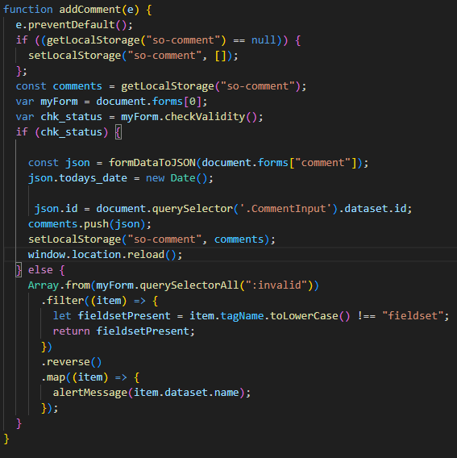

Week 9
Team Activity:
JWT tokens this activity was hard it took a lot of work and effort to get it to work my team struggled with this acitivity.
Trello Card:
Making the ability to add comments to a product. in the DOM it shows the comments that are posted on the page. I struggled a little bit in getting the comments to be shown in the DOM, but I was able to get it figured out.
Week 9 Notes
VARIABLE SCOPE, CLOSURE
javascript is a very function-oriented language. it can be created then passed and called at any given moment. outer variables can be called into a function. if a variable is declared between { } it can only be seen by what is inside that code block
{ let name = "name" }
if not it can be seen and called anywhere let name = "john"
if without inside 2 different blocks it would throw an error GOOD EXAMPLE {let name = "name";} {let name = "John";} BAD EXAMPLE let name = "name"; let name = "john";
also if, for, while, etc. only are visible inside the code block as well
NESTED FUNCTIONS: a function is called "nested" when it is created inside of another function.
example function thisName() { function thatName() { some code } }
LEXICAL ENVIROMENT STEP 1 VARIABLES: every function has a hidden object known as lexical enviroment
lexical enviroment 1 enviroment record- object stores all local variables and its properties 2 outer lexical enviroment associated with outer code global lexical enviroment is associated with the whole script.
let phrase: output = undefined phrase = "hello" output = hello phrase = "bye" output = bye
when the script starts the lexical enviroment is all uninitialized as you assign the value it sets the value then changes the value if it is set to change
STEP 2 FUNCTION DECLARATIONS a function is also a value like a variable is when a lexical enviroment is created a function is immidiatley ready to use. that is why we can use a function that is declared as a function before the declaration
STEP 3 INNER AND OUTER LEXICAL ENVIROMENT
let phrase = "hi"; function say(name) { alert(`${phrase}, ${name}`) } say("John");
the inner lexical enviroment corresponds with the say and it has a single property being "name" and we call the name as John so name = john.
the outer lexical enviroment is the global one so that would be phrase and what is assigned to it. "When the code wants to access a variable – the inner Lexical Environment is searched first, then the outer one, then the more outer one and so on until the global one." in the example above it searches the inner there but can't find it there then searches the outer or global and it finds it and assigns it there.
STEP 4 RETURNING A FUNCTION two functions one being nested when it returns the function it adds a number to the counter or whatever the function is set to do.
GARBAGE COLLECTION: usually a lexical eviroment is removed from memory after the function finishes. if you do something like let g = f(); then it is saved as it is a set value now. a lexical environment dies when it becomes unreachable. it exists only while there is a minimum of one nested function refrencing it.
CURRYING it is an advanced technique of working with functions and can be used in other languages. f(a, b, c) is the same as f(a)(b)(c) currying doesn't call a function it just transforms it.
function curry(f) { return function(a) { return function(b) { return f(a, b); }; }; } // one way to use it could be function sum(a, b) { return a + b; } let curriedSum = curry(sum); alert( curriedSum(1)(2)); // the output is 3
WHAT IS CURRYING USED FOR? logging a function log(date, importance, message) can be used to send multiple arguments at once
function log(date, importance, message){ alert(`[${date.getHours()}:${date.getMinutes()}] [${importance}] ${message}`); } //change that to curry
log - _.curry(log); log(new Date(), "DEBUG", "some debug"); // log(a, b, c) //now we can make a convenient function for current logs. let logNow = log(new Date()); //how it is used. logNow("Information", "message"); // output is [HH:mm] Information message
so the log is now the fixed first argument then it can continue on for the rest of the logNow function. // we can continue on and do the debugging too let debugNow = logNow("DEBUG"); debugNow("message"); // output is [HH:mm] DEBUG message
advanced currying example function sum(x, y, z) { return x + y +z; } let curriedSum = curry(sum); alert( curriedSum(1, 2, 2)); // output is 6, still callable normally alert( curriedSum(1)(2, 3)); // output is 6, currying of the first argument alert(curriedSum(1)(2)(3)); // output is 6, all of it is curried.
DRAWING GRAPHICS the browser is powerful graphic programming tools, from Scalable Vector Graphics language,
GRAPHICS ON THE WEB canvas> can be used to make 2d animations, games, etc. it can be difficult to impossible to make accessible. around 2006-2007 Mozilla was able to work on 3D canvas implementation it became WebGL
GETTING STARTED WITH canvas> to cread at 2D or 3D scene on a webpage you need to use canvas> in HTML example
the numbers represent pixels
CREATING AND SIZING OUR CANVAS 1. set up a html, css, and js files 2. create a in the HTML file 3. open the script file and add code to it const canvas = document.querySelector(".ABC"); const width = (canvas.width = window.innerWidth); const height = (canvas.height = window.innerHeight); using the window.inner(width/height) gets the width and height of the viewport (screen size)
GETTING THE CANVAS CONTEXT AND FINAL SETUP in the script add const ctx = canvas.getContext("2d"); using that is able to draw and things in 2D. using the code below fills the page black to be able to draw on ctx.fillStyle = "rgb(0, 0, 0)"; ctx.fillRect(0, 0, width, height);
2D CANVAS the fillRect(50, 50, 100, 150) gets the rectangle size and the fillStyle puts color in it. do that with different sizes and colors to make the rectangle image in the page beginPath()- start drawing a path at the point where the pen currently is on the canvas. on a new canvas, the pen starts out at (0,0). moveTo()- move the pen to a different point on the canvas, without recording or tracing the line; the pen "jumps" to the new position. fill()- draw a filled shape by filling in the path youve traced so far. stroke()- draw an outline shape by drawing a stroke along the path youve drawn so far.
example of a simple path drawing operation ctx.fillStyle = "rgb(255, 0, 0)"; ctx.beginPath(); ctx.moveTo(50, 50); ctx.fill();
Drawing Lines: 1. the function below converts degree values to radians which will help give an angle value in JavaScript. function degToRad(degrees) { return (degrees * Math.PI) / 180; } 2. Next, start the path and move it to 50, 50. ctx.fillStyloe = "rgb(255, 0, 0)"; ctx.beginPath(); ctx.moveTo(50,50); 3. add to bottom of script ctx.lineTo(150, 50); const triHeight = 50 * Math.tan(degToRad(60)); ctx.lineTo(100, 50 + triHeight); ctx.lineTo(50, 50); ctx.fill();
Drawing circles ctx.arc (150, 106, 50, degToRad(0), degToRad(360), false); the ctx.arc takes 6 parameters which goes (x-axis, y-axis, radius, start angle, end angle, drawn clockwise (false) or counterclockwise (true)); another circle ctx.arc(200, 106, 50, degToRad(-45), degToRad(45), true); starting at -45 degrees then ends at 45 degrees the total colored will be 270 degrees and if you changed true to false it would be the opposite 270 degrees not colored the rest colored
TEXT fillText()- draws filled text strokeText()- draws outline text. both take 3 properties (text, x, y)
IMAGE IN CANVAS const image = new Image(); inamge.src = "image.png"; doing this code below can see part of the image or resize it. ctx.drawImage(image, 20, 20, 185, 175, 50, 50, 185, 175); drawImage(image Reference, x corner you want to cut, y corner you want to cut, width you want cut, height you want cut, x coordinant you want to draw, y coordinant you want to draw, width to draw the cut out area, height to draw the cut out area) image must be updated canvas.setAttribute("aria-label", "firefox logo");
LOOPS AND ANIMATIONS ctx.translate(width / 2, height / 2); doing that causes the start to be moved to (0, 0) rather than the top left corner.
Example function degToRad(degrees) { return (degrees * Math.PI) / 180; } function rand(min, max) { return Math.floor(Math.random() * (max - min + 1)) + min; } let length = 250; let moveOffset = 20; for (let i = 0; i < length; i++) {} using the random picks a random number between the 2 variables. inside the for loop goes this code ctx.fillStyle = `rgba(${255 - length},0,${255 - length},0.9)`; ctx.beginPath(); ctx.moveTo(moveOffset, moveOffset); ctx.lineTo(moveOffset + length, moveOffset); const triHeight = (length / 2) * Math.tan(degToRad(60)); ctx.lineTo(moveOffset + length / 2, moveOffset + triHeight); ctx.lineTo(moveOffset, moveOffset); ctx.fill(); length--; moveOffset += 0.7; ctx.rotate(degToRad(5)); it fills the the triangles and adds one to the page and rotates it and moves it and adds another.
animations 60 frames per second is smooth for the human eye.
window.requestAnimationFrame() it loops through it and makes a nice and smooth transition run the loop() and put it in the requestAnimationFrame(loop) to make it run again and again and have it be smooth transitions and animations each frame it wipes it clean and redraws it
to do canvas animation you will need to
1. clearRect(); 2. save it using save(); use this when you want to save settings you have updated on the canvas 3. draw the graphics you are animating 4. restore the settings in step 2, using restore() 5. call requestAnimationFrame() to schedule the drawing of the next frame.
simple man animation code ctx.translate(width / 2, height / 2); const image = new Image(); image.src = "walk-right.png"; image.onload = draw; let sprite = 0; let posX = 0; function draw() { ctx.fillRect(-(width / 2), -(height / 2), width, height); ctx.drawImage(image, sprite * 102, 0, 102, 148, 0 + posX, -74, 102, 148); // makes the sprite move if (posX % 13 === 0) { // using the % 13 divides by 13 with no remainder if (sprite === 5) { sprite = 0; } else { sprite++; } } if (posX > width / 2) { let newStartPos = -(width / 2 + 102); posX = Math.ceil(newStartPos); console.log(posX); } else { posX += 2; } window.requestAnimationFrame(draw); }
WEB GL
WebGL API can be used to do 3D canvas
you can use a library such as Three.js, PlayCanvas, or Babylon.js
cube spinning animation code
const scene = new THREE.Scene();
const camera = new THREE.PerspectiveCamera( 75, window.innerWidth / window.innerHeight, 0.1, 1000 ); camera.position.z = 5;
const renderer = new THREE.WebGLRenderer(); renderer.setSize(window.innerWidth, window.innerHeight); document.body.appendChild(renderer.domElement);
let cube; const loader = new THREE.TextureLoader(); loader.load("metal003.png", (texture) => { texture.wrapS = THREE.RepeatWrapping; texture.wrapT = THREE.RepeatWrapping; texture.repeat.set(2, 2); const geometry = new THREE.BoxGeometry(2.4, 2.4, 2.4); const material = new THREE.MeshLambertMaterial({ map: texture }); cube = new THREE.Mesh(geometry, material); scene.add(cube); draw(); });
const light = new THREE.AmbientLight("rgb(255,255,255)"); // soft white light scene.add(light); const spotLight = new THREE.SpotLight("rgb(255,255,255)"); spotLight.position.set(100, 1000, 1000); spotLight.castShadow = true; scene.add(spotLight);
function draw() { cube.rotation.x += 0.01; cube.rotation.y += 0.01; renderer.render(scene, camera); requestAnimationFrame(draw); }